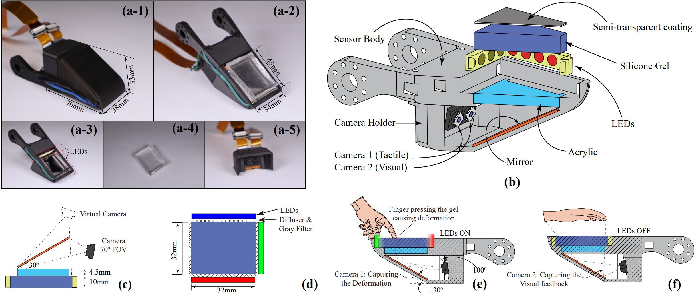

Research
My research aims to develop robots capable of performing everyday manipulation tasks with human-level capabilities. Towards this goal, my focus is on generative models in robotics, imitation learning, and multi-sensory robot manipulation.
|
|
|
LeTac-MPC: Learning Model Predictive Control for Tactile-reactive Grasping
Zhengtong Xu, Yu She
Accepted by IEEE T-RO, 2024
arXiv /
video /
code /
bibtex
@article{xu2024letac,
title={LeTac-MPC: Learning Model Predictive Control for Tactile-reactive Grasping},
author={Xu, Zhengtong and She, Yu},
journal={arXiv preprint arXiv:2403.04934},
year={2024}
}
Close
A generalizable end-to-end tactile-reactive grasping controller with differentiable MPC, combining learning and model-based approaches.
|
|
|
UniT: Unified Tactile Representation for Robot Learning
Zhengtong Xu, Raghava Uppuluri, Xinwei Zhang, Cael Fitch, Philip Glen Crandall, Wan Shou, Dongyi Wang, Yu She
Under Review, 2024
website /
arXiv /
video /
code /
bibtex
@article{xu2024unit,
title={UniT: Unified Tactile Representation for Robot Learning},
author={Xu, Zhengtong and Uppuluri, Raghava and Zhang, Xinwei and Fitch, Cael and Crandall, Philip Glen and Shou, Wan and Wang, Dongyi and She, Yu},
journal={arXiv preprint arXiv:2408.06481},
year={2024}
}
Close
Learn a unified tactile representation with transferability and generalizability only by a single simple object.
|
|
|
VILP: Imitation Learning with Latent Video Planning
Zhengtong Xu, Qiang Qiu, Yu She
Under Review, 2024
arXiv(soon) /
video(soon) /
code
VILP integrates the video generation model into policies, enabling the representation of multi-modal action distributions while reducing reliance on extensive high-quality robot action data.
|
|
|
LeTO: Learning Constrained Visuomotor Policy with Differentiable Trajectory Optimization
Zhengtong Xu, Yu She
Under Review, 2024
arXiv /
video /
code /
bibtex
@article{xu2024leto,
title={LeTO: Learning Constrained Visuomotor Policy with Differentiable Trajectory Optimization},
author={Xu, Zhengtong and She, Yu},
journal={arXiv preprint arXiv:2401.17500},
year={2024}
}
Close
LeTO is a `gray box" method which marries optimization-based safety and interpretability with representational abilities of neural networks.
|
|

|
VisTac: Toward a Unified Multimodal Sensing Finger for Robotic Manipulation
Sheeraz Athar*, Gaurav Patel*, Zhengtong Xu, Qiang Qiu, Yu She
IEEE Sensors Journal, 2023
paper /
video /
bibtex
@article{athar2023vistac,
title={Vistac towards a unified multi-modal sensing finger for robotic manipulation},
author={Athar, Sheeraz and Patel, Gaurav and Xu, Zhengtong and Qiu, Qiang and She, Yu},
journal={IEEE Sensors Journal},
year={2023},
publisher={IEEE}
}
Close
VisTac seamlessly combines high-resolution tactile and visual perception in a single unified device.
|
Awards
- Dr. Theodore J. and Isabel M. Williams Fellowship, Purdue University, 2022
- Chinese National Scholarship, Ministry of Education of China, 2017
|
Teaching
- Vertically Integrated Projects (VIP)-GE Robotics and Autonomous Systems, Grad Mentor, Spring 2024/Fall 2023/Summer 2023
- IE 474-Industrial Control Systems, Teaching Assistant, Fall 2022
|
|
{kind=link}